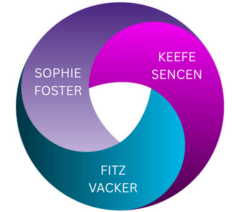
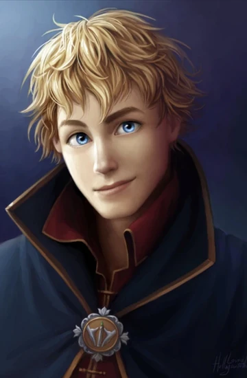
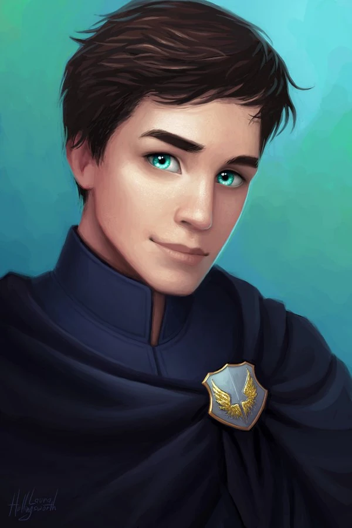

Keeper of the Lost Cities by Shannon Messenger
KOTLC follows Sophie Foster, an elf raised in the human world who returns to the Lost Cities and joins her people. She is the result of an experiment by the Black Swan, a mysterious group who the Council (leaders of the elves) has labeled as traitors and criminals. Sophie attends Foxfire Academy alongside Keefe Sencen and Fitz Vacker, among others, honing her abilities and strengthening her gifts.
This is an ongoing series. So far, 9 books have been
released, along with two 0.5 books and one two graphic
novels:
- Keeper of the Lost Cities
- Exile
- Everblaze
- Neverseen
- Lodestar
- Nightfall
- Flashback
- Legacy
- Stellarlune

Book Trailer
Sophie Foster

Sophie is the main character of KOTLC. She was raised in the human world and has brown eyes, unlike the other eleves, who all have blue eyes. She also has numerous special abilities. She is the most powerful elf in the Lost Cities, despite being only 16 years old.
Sophie's parents are largely unknown for the majority of the series. When she goes to the Lost Cities, she is adopted by Grady and Edaline Vacker, who had recently lost their own daughter in a fire. However, it is revealed that Sophie's mother is none other than Councillor Oralie (Councillors are not allowed to have children in order to remain impartial when ruling!), who had worked in collabortion with the Black Swan to ensure her birth. Sophie's father is still unknown by the end of book 9.
Sophie's Special Abilities
Telepathy
The ability to read minds.Inflicting
The ability to project emotions (negative and positive) onto others.Teleportation
The ability to transport to different locations.Enhancing
The ability to increase the strength of other people's special abilities.Polyglot
The ability to understand and speak all languages.Keefe Sencen

Keefe is one of the other main characters in KOTLC. He loves Sophie, and is an Empath and Polyglot. His mother is the leader of the Neverseen, a rebel group that is trying to take down the Council and the Black Swan. His mother experimented on him before he was born, trying to give him extra special abilities. After he is shot with shadows, his extra special abilities begin to manifest, giving him the skill of controlling people with his voice.
Fitz Vacker

Fitz is the other main male character in KOTC. In most of the books, Sophie has a crush on Fitz. He is actually the one who found her in the human world and brought her back home to the lost cities. He and Sophie are Cognates, meaning they share an intense telepathic bond that serves to heighten both of their telepathic powers. He and Sophie date briefly, but break up when he insists on working to find out who her birth parents are. Like Sophie, he is a Telepath (and, like most eleves, he has only one special ability). He is the 'heir' to the Vacker legacy (the Vackers are an extremely prestigious elven family).